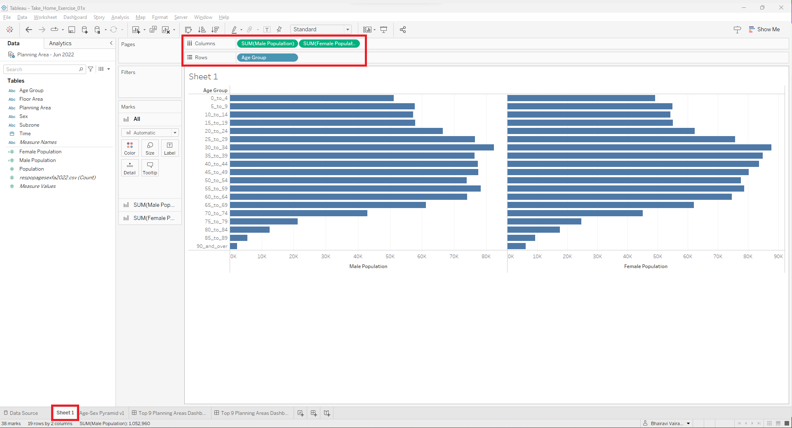
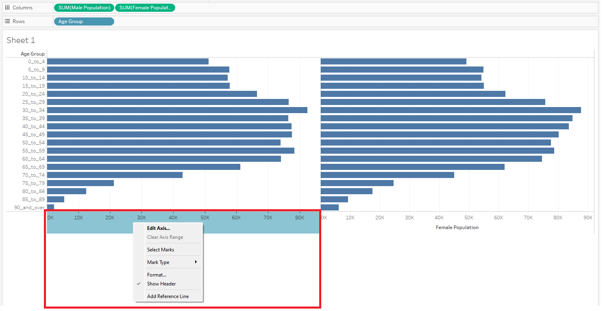
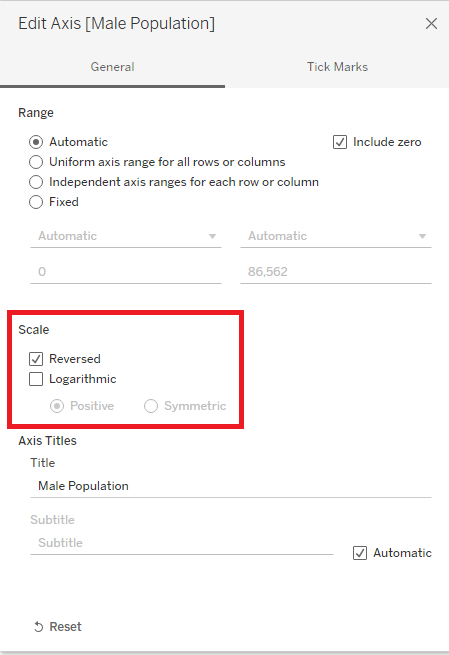
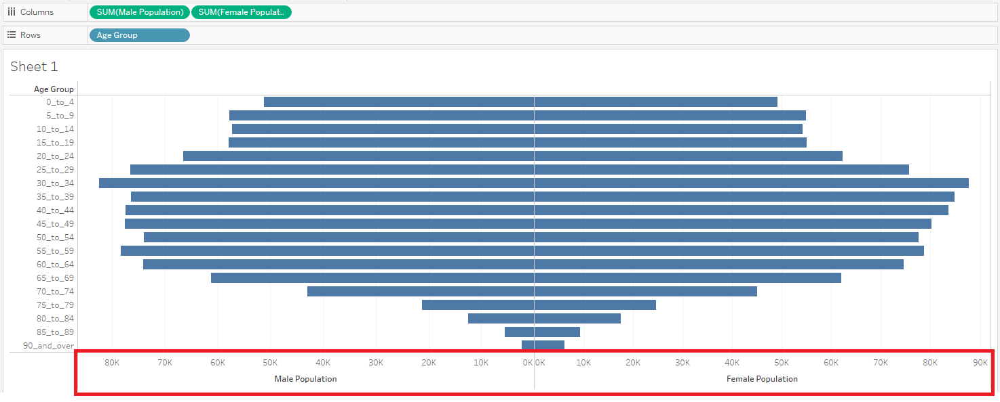
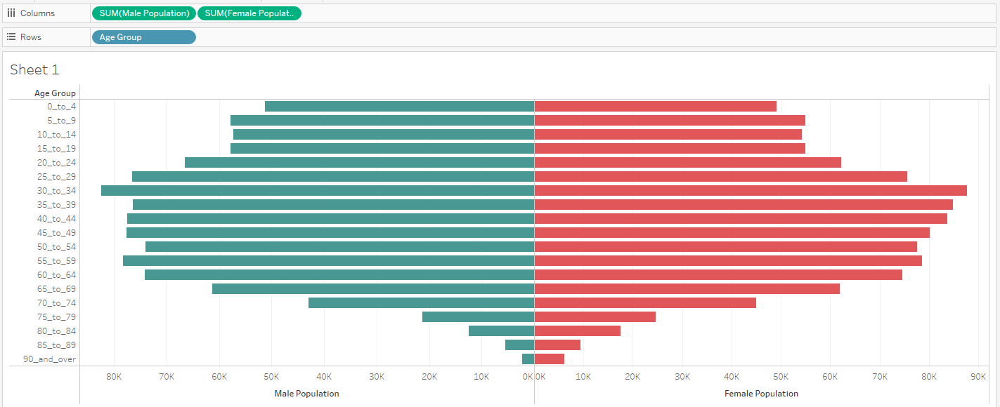
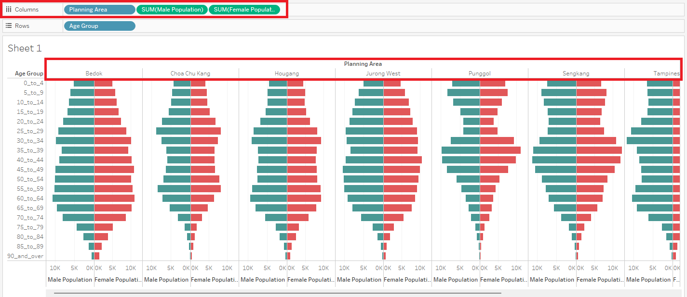
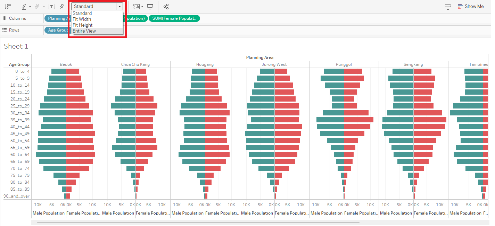
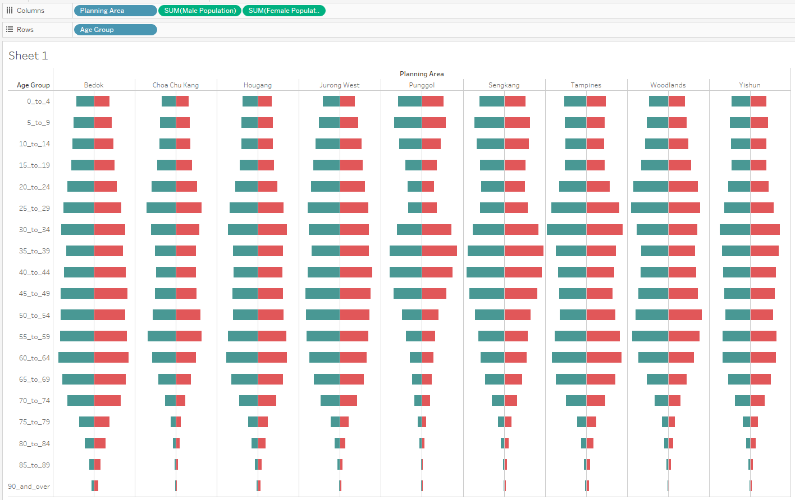
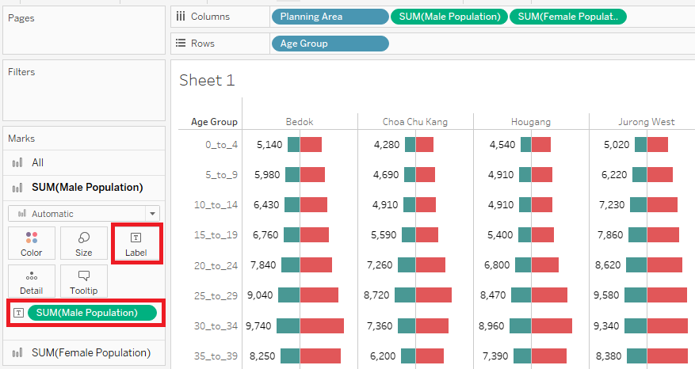

Take-Home Exercise 1
The following is my submission for Take-Home Exercise 1.
Dataset
The dataset used in this take-home exercise was downloaded from the following link, below the sub-section of Population Trends: https://www.singstat.gov.sg/find-data/search-by-theme/population/geographic-distribution/latest-data
In my case, I have selected the Singapore Residents by Planning Area / Subzone, Age Group, Sex and Floor Area of Residence, June 2022.csv option. A zip folder will be downloaded. Upon unzipping the folder, there are two files that are contained in this unzipped folder; one for the raw dataset and one for the notes of the dataset (similar to a readme file).
Unzipped folder:

Dataset:

Notes of Dataset:

Preparation Steps
Now, let’s bring in this raw dataset to Tableau Desktop for our analysis. Please find below a reproducible description of the procedures used to prepare and create the analytical visualization in Tableau Desktop.
| # | Step | Screenshot |
|---|---|---|
| 1 | In Tableau Desktop, in the Data Source pane, click on “Text file” (since we are dealing with a csv file and not excel file) |  |
| 2 | When the popup prompts you to choose a file, click on the raw dataset |  |
| 3 | Once the raw dataset is loaded, note that the data source name and field names are not that meaningful. Let’s first change the data source name to: Planning Area - Jun 2022 |
|
| 4 | Let’s also change the field names according to the Notes of Dataset file that was in the unzipped folder. |
|
| 5 | Once the field names are updated, notice that the field Time is identified to be a numerical field. However, this is supposed to reflect the Year of the record. Hence, let’s change this field’s datatype to Date. |
|
| 6 | In our task, we want to plot the male population and female population against their age groups. For this, let’s create two calculated fields to distinguish the populations by gender. |  |
| 7 | Create calculated field for Male Population (where Sex is “Males”). |  |
| 8 | Create calculated field for Female Population (where Sex is “Females”). |  |
| 9 | In our task, it is stated that we only show 9 planning areas in a view. So, to reduce the size of the data that we load, let’s filter the data source to only keep 9 planning areas in the data. Click on “Add” to add a new data source filter. |  |
| 10 | In the Data Source Filters popup, click on “Add” to add a new filter for the Planning Area field. |
|
| 11 | Once you click on “Ok”, you will be prompted in a popup to choose which values in the Planning Area field you want to keep in the view. Select the tab “Top”, and the radio button “By field” to choose the Top 9 by Population Sum. This will filter the data to only show the top 9 planning areas which have the highest population for the Jun 2022 dataset. |  |
| 12 | Click on “Ok” to close the popup. Notice that the Data Source Filters popup, there is a new row stating that Planning Area keeps 9 of 55 members. This indicates that our filter is successfully applied. |  |
| 13 | Click on “Ok” to close the Data Source Filters popup. Notice now that the upper right hand corner indicates that there is one filter being applied to the data source. |  |
| 14 | Now, let’s navigate to the default sheet that was created to build our visualization. Click on “Sheet 1” and drag the two calculated fields we created (Male Population & Female Population) to the Columns pane and the Age Group field to the Rows pane. Notice now that we have two bar charts - one for male population and one for female population, for each age group in our dataset. |  |
| 15 | Right click on the axis for Male Population field and select “Edit Axis”. |  |
| 16 | In the popup, under the section “Scale”, tick the check-box for “Reversed” to reverse the axis for the Male Population field. Now, if you close this popup, you will notice that the divider between the two bar charts indicates that the axis starts from 0K. |   |
| 17 | To distinguish between the two bar charts in our view, let’s color the bars accordingly. In the marks card for Male Population field, change the color to teal. |  |
| 18 | Similarly, in the marks card for Female Population field, change the color to red. Now, we can clearly distinguish between the Male and Female bars in our view. |
 |
| 19 | In our task, we want to build the age-sex pyramid for 9 planning areas. Let’s bring in the Planning Area field into the Columns pane to view this breakdown. Notice now that we have the column-level breakdown for each planning area in our dataset. |  |
| 20 | Notice that we have scroll bars in our view. Let’s change the view to “Entire View” to eliminate this. |  |
| 21 | Now we can view the full chart in the view. However, it still looks cluttered. Let’s remove the axis headers for both Male Population and Female Population fields. Right click on the axis header and un-check “Show Header” for either of the axis. This will remove the axis header in our chart. |  |
| 22 | Let’s format the bars in the view now. Under the marks card for All, drag the slider to reduce the size of the bars till the recommended size (indicated by a pipe). |  |
| 23 | Notice that there are many grid lines in our chart which makes the view cluttered. To format grid line, right click on the view and select the “Format” option. |  |
| 24 | In the format panel, click on the icon for grid lines. Under the tab “Columns”, set Grid Lines to None. Notice now that the view looks much cleaner. |
 |
| 25 | We’re looking at bars now but we can’t assume what values these bars represent. Let’s include the text labels by including the relevant fields in the label section of the marks card. For the male population marks card, let’s drag the SUM(Male Population) pill to the label section. |  |
| 26 |


We have now successfully built the visualization in Tableau Desktop.
Discussion of Analysis
The following section elaborates on the patterns revealed by the analytical visualization that was built using Tableau Desktop.
Here are the key analysis that we will be discussing:
- xx
- yy
- zz
This concludes the work submitted for Take-Home Exercise 1. Thank you.